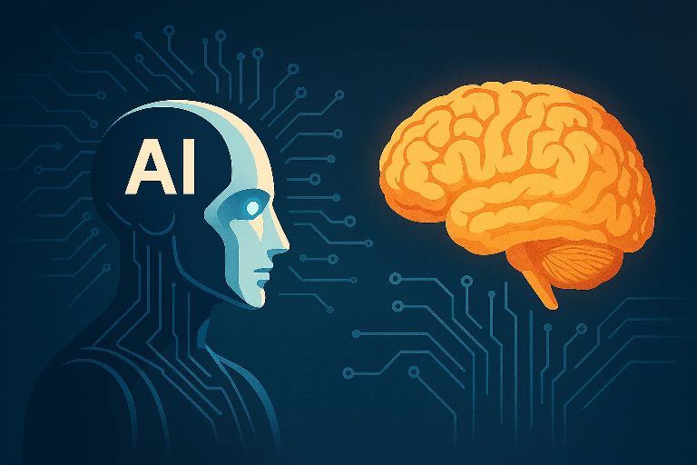
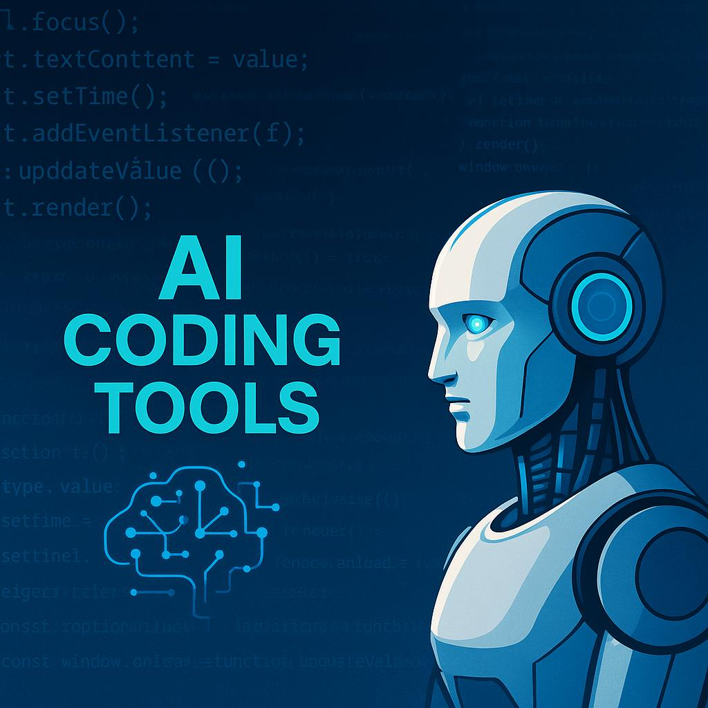
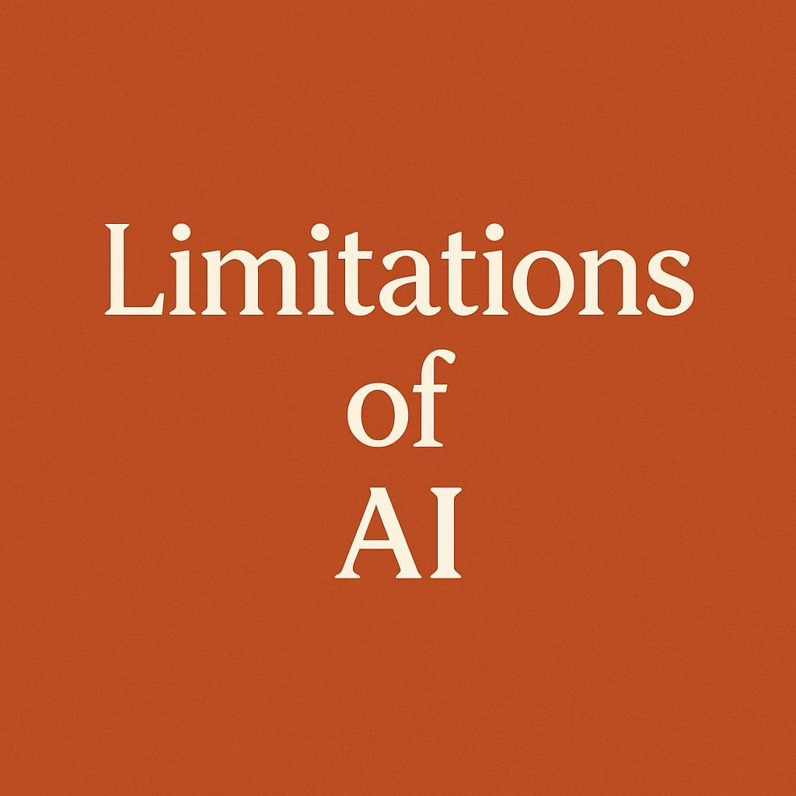
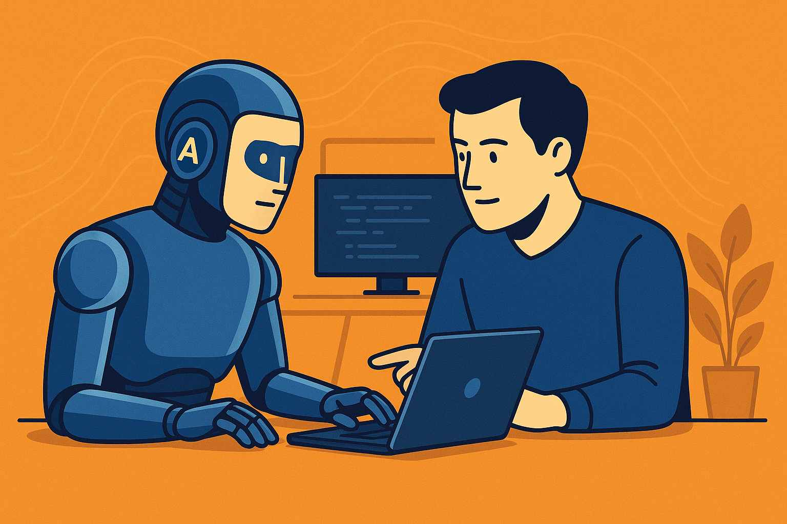

Will Coders Be Replaced by AI? The Truth You Should Know

The Rise of AI Coding Tools
In recent years, artificial intelligence (AI) has made mind-blowing progress. From generating art and music to writing essays and even coding entire applications, it's no surprise that people are asking: Will AI replace coders?
AI tools like GitHub Copilot, ChatGPT, and Tabnine have shown that machines can write and understand code to an impressive degree. Developers are now using AI to:
- Generate functions
- Fix bugs
- Refactor old code
- Translate code between languages
- Write documentation

This isn’t science fiction. It’s happening now. And it's making coding faster and easier — but does that mean coders will become obsolete?
Coding Is More Than Typing Code
Real software development involves far more than just writing lines of code. It requires:
- Understanding real-world problems
- Designing scalable systems
- Working with teams
- Debugging complex edge cases
- Communicating with clients
- Prioritizing features based on user needs
AI might help with the “typing” part, but human coders still need to steer the ship. Without human creativity and judgment, software would lack purpose and direction.
AI Has Limitations (For Now)
Despite its speed and accuracy, AI has its flaws. It can:
- Generate insecure or inefficient code
- “Hallucinate” functions that don’t exist
- Miss critical business logic
- Struggle with abstract or ambiguous requirements
- Misinterpret user intent

These limitations show why the role of a skilled developer is still vital in today’s tech landscape.
The Role of Coders Is Evolving
Coders won’t be replaced — their role will evolve. Just like calculators didn’t replace mathematicians, AI won’t erase developers. Instead, it will:
- Automate repetitive tasks
- Let humans focus on design and creativity
- Make solo developers more powerful
- Increase team productivity
Think of AI as your coding assistant, not your replacement. Those who adapt will thrive in the new tech landscape.
New Coders Shouldn't Be Afraid
Some new programmers fear that learning to code is a waste of time in the age of AI. That’s far from the truth.
In fact, now is one of the best times to learn programming. Why?
- AI can help you learn faster
- You can build projects quicker
- You can understand large codebases more easily
- You can work on real-world apps with less prior experience
Coders who learn with AI will have a serious edge over those who fear it or ignore it.
Jobs Will Change, Not Disappear
Yes, AI might reduce the need for basic coding tasks, but it will create demand for new roles, including:
- AI Prompt Engineers
- System Architects
- Software Testers
- AI Ethics Advisors
- Human-AI Collaboration Specialists

Just like the internet wiped out some jobs but created millions of others, AI will reshape the job market rather than destroy it.
The Human Touch Still Matters
No matter how powerful AI becomes, it can’t replicate:
- Human empathy
- Creative thinking
- Emotional intelligence
- Ethical judgment
These qualities are essential in roles such as UX design, product innovation, leadership, and community building.
Final Thoughts: Should You Be Worried?
If you're a coder — beginner or expert — don’t fear AI. Embrace it. Learn it. Use it.
The best coders of tomorrow won’t fight AI — they’ll harness it. They'll combine deep human insight with the incredible processing power of machines to build the next generation of technology.
“AI won’t replace coders. But coders who use AI will replace those who don’t.”
Mr Right— Eugene,(GrindHub creator)
← Back to Blogs